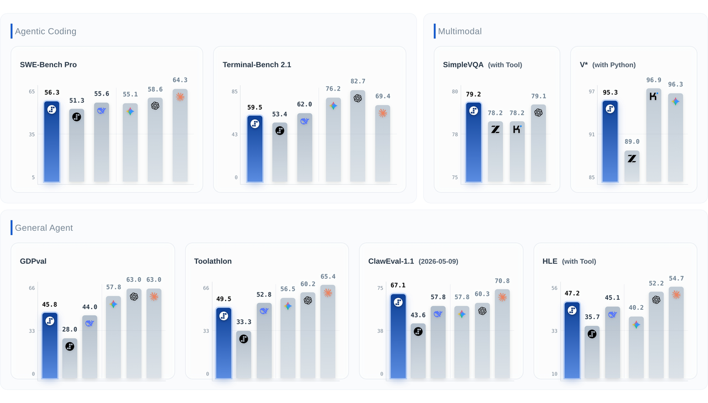

[ModelPage]: https://static.stepfun.com/blog/step-3.7-flash/
1. Introduction
Step 3.7 Flash is a 198B-parameter sparse Mixture-of-Experts (MoE) vision-language model that combines a 196B-parameter language backbone with a 1.8B-parameter vision encoder for native image understanding. Engineered for high-frequency production workloads, it activates approximately 11B parameters per token and delivers a throughput of up to 400 tokens per second. Step 3.7 Flash supports a 256k context window and offers three selectable reasoning levels (low, medium, and high) so developers can easily balance speed, cost, and cognitive depth.
We built Step 3.7 Flash for developers who need to scale agentic workflows that combine perception, search, and reasoning. It is designed to handle intensive tasks such as parsing massive financial reports in one pass, running multi-step search loops with cross-source verification, or operating concurrent coding agents in high-throughput pipelines.
2. Capabilities & Performance
Multimodal Perception and Verification
The model delivers top-tier visual intelligence, securing first place on SimpleVQA (Search) with a 79.2 and achieving frontier parity on V* (Python) at 95.3. These metrics reflect strong visual grounding and retrieval-augmented reasoning beyond basic image description. The model accurately processes dense visual interfaces, such as UI wireframes, application GUIs, and data charts, to map them into structured code. When it encounters an incomplete visual asset, it can independently identify missing data and execute lookups to verify context before returning a factually verified conclusion.
Workflow Integrity and Tool Orchestration
Execution reliability is critical for autonomous agents. Step 3.7 Flash leads the ClawEval-1.1 benchmark with a score of 67.1, which significantly outperforms the next closest competitor at 59.8. This performance demonstrates high resistance to adversarial traps and strict adherence to system policies during multi-turn orchestration. Backed by scores of 49.5 on Toolathlon and 48.1 on HLE w. Tool, this profile ensures high trajectory integrity. Step 3.7 Flash reliably interacts with external APIs and executes long-horizon workflows without drifting from instructions or violating system constraints.
Code Engineering and Professional Baselines
Step 3.7 Flash is built for live engineering tasks and secured a definitive second-place finish on SWE-Bench PRO with a score of 56.3. It can independently trace multi-file repositories, isolate bugs from raw issue reports, and generate functional patches that pass automated unit tests. While evaluations like Terminal-Bench 2.1 (59.5) and GDPVal-AA (45.8) show clear areas for future optimization compared to the absolute peak of the cohort, they establish a dependable baseline for system interactions and structured professional deliverables.

3. Pricing
| Token Type | Price |
|---|---|
| Input (cache miss) | $0.20 / M tokens |
| Input (cache hit) | $0.04 / M tokens |
| Output | $1.15 / M tokens |
4. Availability, Deployment, and Ecosystem
- Availability: Step 3.7 Flash is available on the StepFun Open Platform — platform.stepfun.ai (Global) and platform.stepfun.com (China), OpenRouter, and NVIDIA NIM. StepFun is also partnering with DeepInfra, Fireworks AI, and Modal to expand availability soon.
- Deployment: Step 3.7 Flash supports flexible deployment across cloud, data center, and local environments. For large-scale production and enterprise use cases, Step 3.7 Flash can be deployed on modern data center infrastructure. For local and workstation scenarios, it can also run on high-memory devices such as NVIDIA DGX Station, AMD Ryzen AI Max+ 395-based systems, and Mac Studio / Macbook Pro devices with at least 128GB unified memory.
- Ecosystem: Step 3.7 Flash is supported across popular open-source infrastructure for both inference and model development. For inference and serving, developers can use vLLM, SGLang, Hugging Face Transformers, and llama.cpp. For model development & customization workflows, StepFun model support has landed in the NVIDIA Nemo ecosystem, including AutoModel, Megatron Core and Megatron Bridge. Step 3.7 Flash is also available as an NVIDIA NIM inference microservice for on-prem, cloud, or hybrid deployment.
5. Examples
You can get started with Step 3.7 Flash in minutes using StepFun's API or via other inference providers.
Pick the rightbase_urlfor your region. StepFun operates two regional platforms with separate API hosts. Thebase_urlyou pass to the OpenAI client must match the platform where your API key was issued, otherwise requests will be rejected as unauthorized.
- Global: platform.stepfun.ai —base_url=https://api.stepfun.ai/v1
- China: platform.stepfun.com —base_url=https://api.stepfun.com/v1
To avoid hard-coding the wrong region, the examples below read both the API key and base URL from environment variables. Export them once before running:
```bash
export STEP_API_KEY="sk-..."
export STEP_BASE_URL="https://api.stepfun.ai/v1" # use https://api.stepfun.com/v1 for the China platform
```
5.1 Chat Example
pythonimport os from openai import OpenAI client = OpenAI( api_key=os.environ["STEP_API_KEY"], base_url=os.environ["STEP_BASE_URL"], ) completion = client.chat.completions.create( model="step-3.7-flash", messages=[ { "role": "system", "content": "You are an AI assistant provided by StepFun. You are good at Chinese, English, and many other languages, and you can see, think, and act to help users get things done.", }, { "role": "user", "content": "Introduce StepFun's artificial intelligence capabilities." }, ], ) print(completion)
5.2 Text and Image Input Example
pythonimport os from openai import OpenAI client = OpenAI( api_key=os.environ["STEP_API_KEY"], base_url=os.environ["STEP_BASE_URL"], ) completion = client.chat.completions.create( model="step-3.7-flash", messages=[ { "role": "user", "content": [ {"type": "text", "text": "What is in this picture?"}, { "type": "image_url", "image_url": {"url": "https://example.com/photo.jpg"}, }, ], }, ], ) print(completion)
6. Local Deployment
Step 3.7 Flash is optimized for local inference and supports industry-standard backends including vLLM, SGLang, Hugging Face Transformers and llama.cpp.
6.1 vLLM
We recommend using StepFun's prebuilt vLLM Docker image with Step 3.7 support.
- Install vLLM.
bash# via Docker docker pull vllm/vllm-openai:stepfun37
- Launch the server.
- For FP8 model
``bash vllm serve <MODEL_PATH_OR_HF_ID> \ --served-model-name step3p7-flash \ --tensor-parallel-size 8 \ --enable-expert-parallel \ --disable-cascade-attn \ --reasoning-parser step3p5 \ --enable-auto-tool-choice \ --tool-call-parser step3p5 \ --speculative_config '{"method": "mtp", "num_speculative_tokens": 3}' \ --trust-remote-code ``
- For BF16 model
``bash vllm serve <MODEL_PATH_OR_HF_ID> \ --served-model-name step3p7-flash-bf16 \ --tensor-parallel-size 8 \ --enable-expert-parallel \ --disable-cascade-attn \ --reasoning-parser step3p5 \ --enable-auto-tool-choice \ --tool-call-parser step3p5 \ --speculative_config '{"method": "mtp", "num_speculative_tokens": 3}' \ --trust-remote-code ``
- For NVFP4 model
Compared to standard precisions, running the FP4 quantized version requires modelopt activation and FP8 KV Cache alignment. ``bash python3 -m vllm.entrypoints.openai.api_server \ --host 0.0.0.0 \ --port ${PORT} \ --model stepfun-ai/Step-3.7-Flash-NVFP4 \ --served-model-name step3p7 \ --tensor-parallel-size 4 \ --gpu-memory-utilization 0.9 \ --enable-expert-parallel \ --trust-remote-code \ --quantization modelopt \ --kv-cache-dtype fp8 \ --max-model-len 8192 \ --reasoning-parser step3p5 \ --enable-auto-tool-choice \ --tool-call-parser step3p5 \ --async-scheduling ``
6.2 SGLang
- Install SGLang.
bash# via Docker docker pull lmsysorg/sglang:dev-step-3.7-flash # or from source (pip) pip install "sglang[all] @ git+https://github.com/sgl-project/sglang.git"
- Launch the server.
Note: For Blackwell GPUs, --mm-attention-backend fa4 may be used.- For BF16 model
bashsglang serve --model-path stepfun-ai/Step-3.7-Flash \ --tp 8 \ --reasoning-parser step3p5 \ --tool-call-parser step3p5 \ --enable-multimodal \ --speculative-algorithm EAGLE \ --speculative-num-steps 3 \ --speculative-eagle-topk 1 \ --speculative-num-draft-tokens 4 \ --enable-multi-layer-eagle \ --trust-remote-code \ --host 0.0.0.0 \ --port 8000
- For FP8 model
bashsglang serve --model-path stepfun-ai/Step-3.7-Flash-FP8 \ --tp 8 \ --ep 4 \ --reasoning-parser step3p5 \ --tool-call-parser step3p5 \ --enable-multimodal \ --speculative-algorithm EAGLE \ --speculative-num-steps 3 \ --speculative-eagle-topk 1 \ --speculative-num-draft-tokens 4 \ --enable-multi-layer-eagle \ --trust-remote-code \ --host 0.0.0.0 \ --port 8000
- For NVFP4 model
bashsglang serve --model-path stepfun-ai/Step-3.7-Flash-NVFP4 \ --tp 4 --ep 4 \ --moe-runner-backend flashinfer_trtllm \ --kv-cache-dtype fp8_e4m3 \ --quantization modelopt_fp4 \ --trust-remote-code \ --reasoning-parser step3p5 \ --tool-call-parser step3p5 \ --attention-backend trtllm_mha
6.3 Transformers (Debug / Verification)
Use this snippet for quick functional verification. For high-throughput serving, use vLLM or SGLang.
Note: Deployment of this model requires transformers 5.0 or later.pythonfrom transformers import AutoProcessor, AutoModelForCausalLM MODEL_PATH = "<MODEL_PATH_OR_HF_ID>" # 1. Setup processor = AutoProcessor.from_pretrained(MODEL_PATH, trust_remote_code=True) model = AutoModelForCausalLM.from_pretrained( MODEL_PATH, device_map="auto", dtype="auto", trust_remote_code=True ) # 2. Prepare Input messages = [ { "role": "user", "content": [ {"type": "image", "url": "https://example.com/photo.jpg"}, {"type": "text", "text": "What is in this picture?"} ] }, ] inputs = processor.apply_chat_template( messages, tokenize=True, add_generation_prompt=True, return_dict=True, return_tensors="pt", ).to(model.device) # 3. Generate generated_ids = model.generate(**inputs, max_new_tokens=128, do_sample=False) output_text = processor.decode(generated_ids[0][inputs.input_ids.shape[1]:], skip_special_tokens=True) print(output_text)
6.4 llama.cpp
System Requirements
GGUF Model Weights:
| Component | Quantization | File Size |
|---|---|---|
| Language Model | Q4_K_S | 111.5 GB |
| Language Model | IQ4_XS | 104.99 GB |
| Language Model | Q3_K_L | 102.5 GB |
| Multimodal Projector | FP16 | 3.97 GB |
- Runtime Overhead: ~7 GB
- Minimum unified memory / VRAM: 120 GB (e.g., Mac Studio, NVIDIA DGX Station, AMD Ryzen AI Max+ 395)
- Recommended: 128 GB unified memory
Steps
- Use llama.cpp:
bashgit clone https://github.com/stepfun-ai/llama.cpp.git cd llama.cpp git checkout -b step3.7 origin/step3.7
- Build llama.cpp on Mac:
bashcmake -B build-macos -S . \ -DCMAKE_BUILD_TYPE=Release \ -DBUILD_SHARED_LIBS=ON \ -DLLAMA_BUILD_SERVER=ON \ -DLLAMA_BUILD_TESTS=ON \ -DGGML_METAL=ON \ -DGGML_METAL_EMBED_LIBRARY=ON \ -DGGML_BLAS=ON \ -DGGML_BLAS_VENDOR=Apple \ -DGGML_ACCELERATE=ON \ -DGGML_NATIVE=ON cmake --build build-macos -j8
- Build llama.cpp on DGX-Spark:
bashcmake -S . -B build-cuda \ -DCMAKE_BUILD_TYPE=Release \ -DGGML_CUDA=ON \ -DGGML_CUDA_GRAPHS=ON \ -DGGML_CUDA_FORCE_MMQ=ON \ -DLLAMA_OPENSSL=OFF \ -DLLAMA_BUILD_COMMON=ON \ -DLLAMA_BUILD_TOOLS=ON \ -DLLAMA_BUILD_SERVER=ON \ -DLLAMA_BUILD_EXAMPLES=OFF \ -DLLAMA_BUILD_TESTS=OFF cmake --build build-cuda -j8
- Build llama.cpp on AMD Windows:
bashcmake -S . -B build-vulkan \ -DCMAKE_BUILD_TYPE=Release \ -DGGML_VULKAN=ON \ -DGGML_NATIVE=ON \ -DLLAMA_BUILD_SERVER=ON \ -DLLAMA_BUILD_UI=OFF \ -DLLAMA_BUILD_TOOLS=ON cmake --build build-vulkan -j8
- Run with
llama-cli:
bash./llama-cli -m Step3.7_Q4_K_S.gguf -b 2048 -ub 2048 -fa on --temp 1.0 -p "What's your name?"
- Test performance with
llama-batched-bench:
bash./llama-batched-bench -m step3.7_Q4_K_S.gguf -c 32768 -b 2048 -ub 2048 -npp 0,2048,8192,16384,32768 -ntg 128 -npl 1
7. Using Step 3.7 Flash on Agent Platforms
You can use Step 3.7 Flash on Agent platforms such as Hermes Agent, OpenClaw, Kilo Code, and more.
8. Getting in Touch
As we work to shape the future of AGI by expanding broad model capabilities, we want to ensure we are solving the right problems. We invite you to be part of this continuous feedback loop — your insights directly influence our priorities.
- Join the Conversation: Our Discord community is the primary hub for brainstorming future architectures, proposing capabilities, and getting early access updates 🚀
- Report Friction: Encountering limitations? You can open an issue or start a discussion on GitHub / HuggingFace, or flag it directly in our Discord support channels.
📄 License
This project is open-sourced under the Apache 2.0 License.